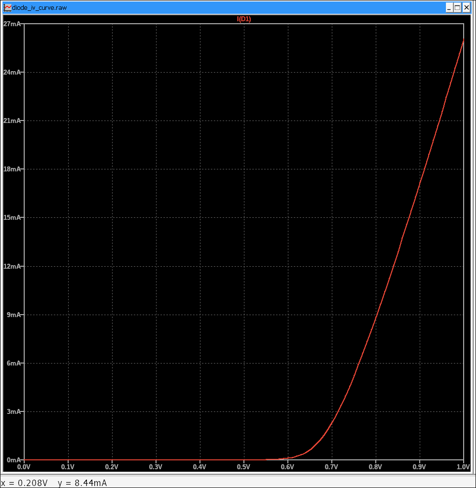

2. DC Sweep (.dc Analysis): Component Characteristics & Transfer Functions
DC Sweep analysis (often just called .dc analysis) in LTSpice allows you to vary a DC voltage or current source over a specified range and observe its effect on other voltages or currents in the circuit. This is invaluable for generating I-V curves for components (like diodes or transistors), analyzing transfer characteristics of amplifiers, or understanding the DC operating behavior of a circuit across different input conditions.
2.1 Setting Up a Circuit for DC Sweep (Diode I-V Curve Example)
Let's set up a simple circuit to generate the I-V (current-voltage) curve of a diode. We'll vary the voltage across the diode and plot the current flowing through it.
- New Schematic: Open a new schematic (File > New Schematic or Ctrl+N).
- Place Components:
- A Voltage Source (voltage): This will be our swept source. We'll name it V1 (default name is fine). Set its DC value initially (0V).
- A Diode (diode): Go to Component (P) and select diode.
- A Resistor (res): Add a small series resistor (e.g., 10ohms) in series with the diode. This is good practice to limit current in simulations, especially when sweeping voltage across non-linear components.
- A Ground (GND).
- Wire Circuit: Connect V1 (+) to the resistor, resistor to the diode's anode, diode's cathode to GND, and V1 (-) to GND.
- Save: Save your circuit (e.g., diode_iv_curve.asc).
The series resistor R1 helps prevent extremely high currents that could occur when sweeping the voltage across the diode, aiding in simulation convergence.
2.2 Configuring the .dc Analysis Command
Now, let's tell LTSpice to perform the DC sweep.
- Go to Simulate > Configure Analysis from the menu bar or press A
- In the Configure Analysis dialog, select the DC sweep tab.
- Set the parameters as follows:
- Name of 1st Source to Sweep: Type V1 (this must match the name of your voltage source).
- Type of Sweep: Select Linear. This will sweep V1 in equal voltage steps.
- Start Value: Enter 0 (start from 0V).
- Stop Value: Enter 1 (sweep up to 1V).
- Increment: Enter 0.01 (take a data point every 0.01V).
- Click OK. A .dc V1 0 1 0.01 directive will appear on your cursor. Click to place it on your schematic.
LTSpice Command (.dc directive in schematic):
.dc V1 0 1 0.01You can also sweep temperature, global parameters (from a .param statement), or a model parameter by selecting the appropriate type of sweep.
2.3 Running the Simulation and Analyzing Results
Now, let's run the simulation and plot the diode's I-V curve.
- Go to Simulate > Run (or click the Play icon on the toolbar) or press ALT + R.
- A plot window will appear. The X-axis will automatically be set to the swept source, V1, ranging from 0V to 1V.
- To plot the current through the diode, move your mouse over the diode symbol. A current probe icon will appear. Click on the diode.
You should see a curve showing the current through the diode (I(D1)) as a function of the voltage across it. The current will be very small initially and then rise exponentially once the forward voltage (around 0.7V for a silicon diode) is reached.
The DC Sweep analysis is a powerful way to understand the steady-state behavior of your circuit and the characteristics of its components over a range of DC input conditions.